A number of years ago, I initiated a research project aiming at building a change detector for remote sensing imagery which doesn't require any labeled data but instead is generic. It detects significant structural changes and can be applied to any type of imagery. This offers a wide range of applications and I have demonstrated the scalability of the model for global deployments.
Learning from a Single Image — SinGAN as the Engine of Data Synthesis
The foundation of this work is SinGAN, a generative model capable of learning the internal statistics of a single natural image. By constructing a multi-scale pyramid of GANs, SinGAN captures structural patterns and textures that allow it to generate new samples or harmonize pasted objects within the same image context.
For remote sensing applications, this property is ideal: it enables synthesizing realistic satellite images where "changes" can be precisely defined by the data generation process. Different harmonization start scales control how much the pasted patch is blended into the background. Through experimentation, a start scale of 3 produced the most visually consistent results, preserving global structure while removing local discontinuities.
Each GAN stage refines the spatial detail of the synthesized image, progressively building realistic context. The pyramid structure (Figure 1) and the harmonization process form the generative backbone of the dataset creation pipeline.
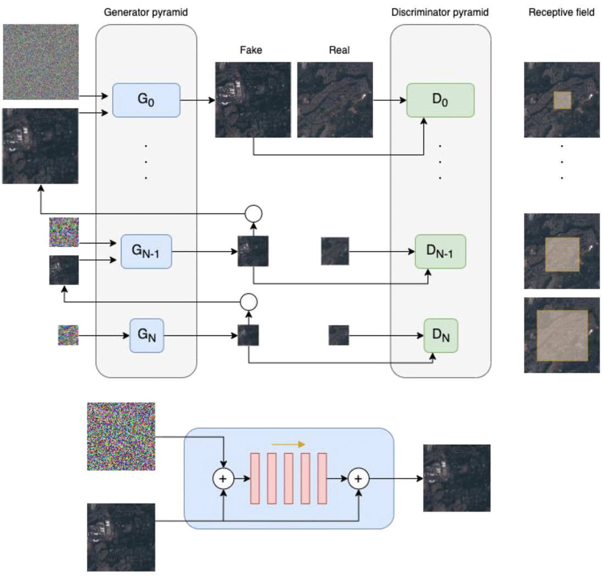
Figure 1: GAN pyramid harmonization process showing patch integration across scales. The architecture of SinGAN consists of a stack of generators and discriminators.
Sampling Patches for Synthetic Change Generation
To generate training data with known changes, patches are sampled from the surroundings of a background image and inserted into it. This creates a "changed" image paired with a ground truth mask that marks where synthetic modifications occurred. The process involves:
- Selecting a background Sentinel-2 image.
- Sampling multiple patches from surrounding regions.
- Pasting them at random positions within the background.
- Harmonizing the composite using SinGAN to achieve visual realism.
The resulting dataset includes the harmonized image, the reference image, and the binary mask (Figure 4), allowing supervised training of a change detection network without requiring manual annotation.
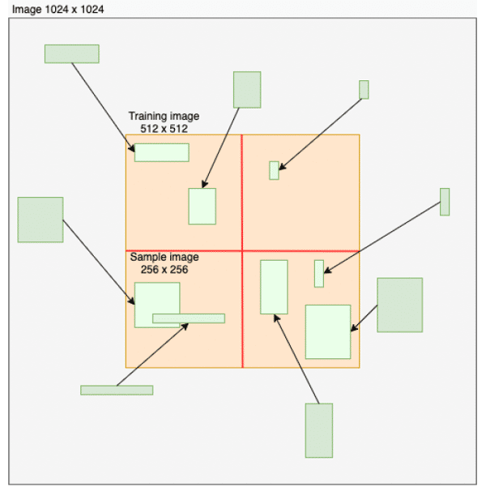
Figure 2: Illustration of the sampling of patches and pasting into the training image.
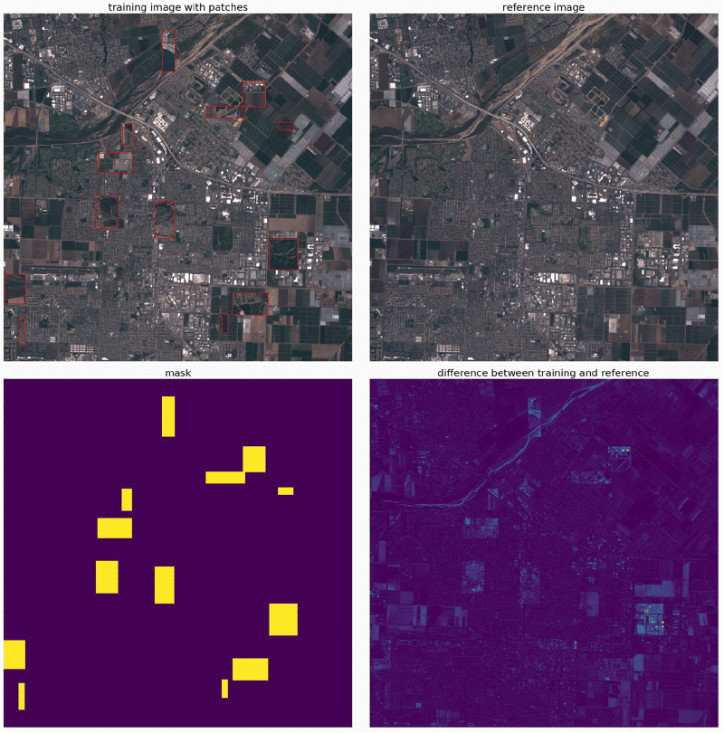
Figure 3: Pasted patches in the training image (top left), reference image (top right), mask (bottom left) and difference between training image and reference image (bottom right).
Harmonization Results — From Raw Patches to Seamless Images
The harmonization step ensures that synthetic patches blend naturally with the original satellite imagery. Pixel-wise difference maps confirm that modifications are confined to local regions near the patch boundaries, while large-scale color and texture remain consistent. This step is essential for producing high-quality synthetic datasets that faithfully mimic natural variation without introducing unrealistic artifacts.
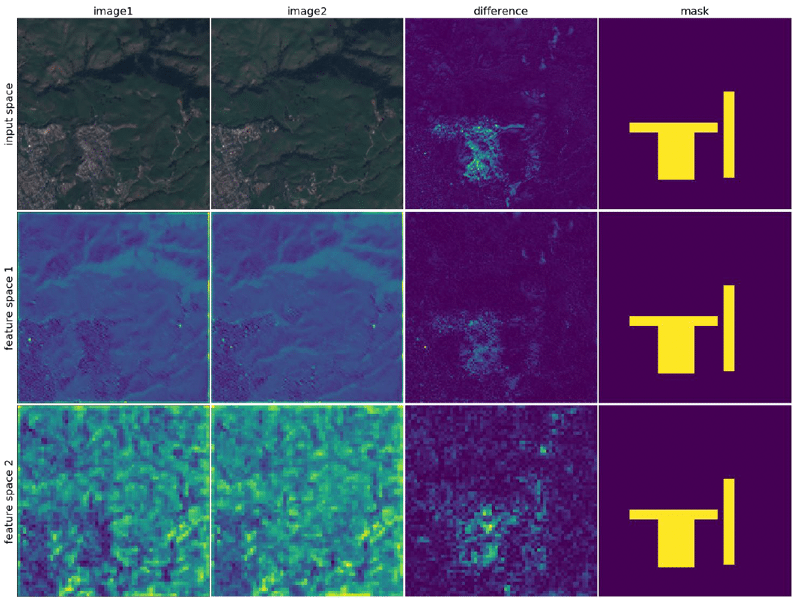
Figure 4: Example of synthesized image, reference image, difference and target mask (from left to right) at the input level (top row) as well as in feature space at two different model depths (middle and bottom row).
The Change Detection Model — WNet Architecture
The WNet is the deep neural network architecture designed to learn structural differences between two images. It extends the UNet design by introducing two encoders — one per image — followed by a shared decoder network. Each encoder is a ResNet-50 pre-trained on ImageNet with frozen weights, ensuring stable feature extraction.
Feature maps from different levels of both encoders are concatenated and fed into the decoder, which reconstructs a binary change probability map at full resolution. This architecture enables detection of structural and spectral differences while remaining invariant to illumination and radiometric noise — a key property for satellite change detection. Figure 5 illustrates the WNet architecture.
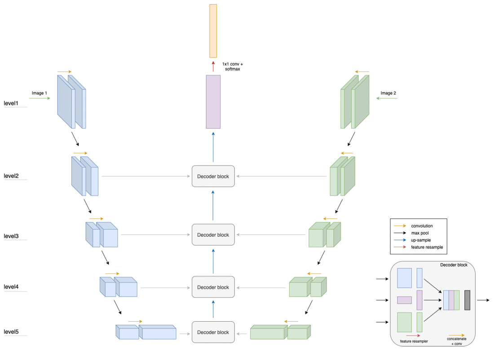
Figure 5: Model architecture for the change detection: WNet. The network consists of two encoders and a decoder with decoder blocks.
Model Inference Modes — Static and Temporal Change Detection
The WNet can operate in multiple inference modes. In the standard configuration, it compares two images to produce a binary change mask. To capture temporal dynamics, we extend this to sequences: a reference image is compared to a stack of subsequent images, producing an array of change maps that encode the probability of change through time (Figure 6).
By aggregating detections across time, we can derive color-coded maps where hue represents the estimated time of change occurrence. Figure 7 illustrates an example of change detection with colors representing the date the change was first observed. This method distinguishes transient changes from persistent transformations, enabling temporal interpretation of events such as construction or deforestation.
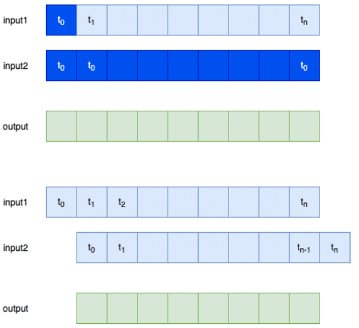
Figure 6: Image stacks can be used to create change maps at different times.
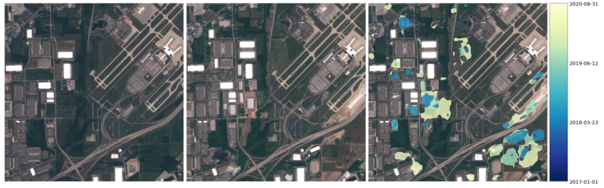
Figure 7: Earliest scene (left), latest scene (middle) and model output after running an image stack through the model to determine the time the change has happened, overlaid on top of the latest scene (right).
Real-World Deployments and Multi-Band Insights
The Generic Change Detector was deployed using Sentinel-2 data with six spectral bands (RGB, NIR, SWIR1, SWIR2). A preprocessing 1×1 convolution layer was added to combine these channels into latent features, revealing the contribution of infrared bands to change detection performance.
Figure 8 demonstrates that models trained with all six bands outperform RGB-only versions, particularly in detecting vegetation loss and deforestation. The addition of SWIR and NIR bands enables the network to capture subtle spectral variations not visible in RGB space.
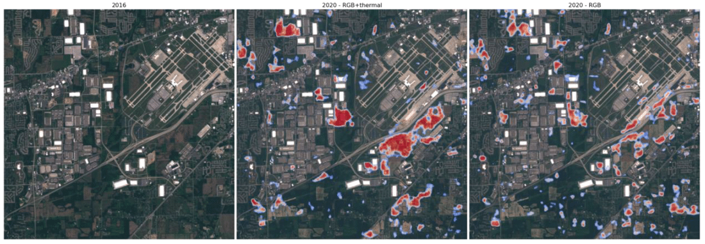
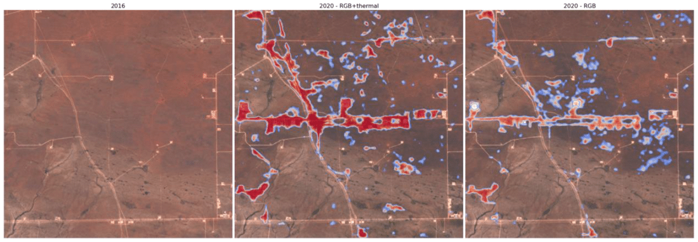
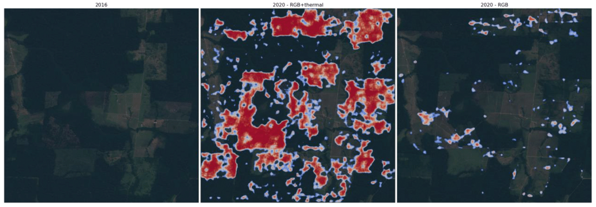
Figure 8: Example change detection for three cases: changes around airport (top), wellpad build up (middle), deforestation (bottom). The center column shows the output of the model that includes thermal bands while the right column corresponds to the model that uses only RGB.
Ablation Studies — Understanding WNet Feature Levels
To evaluate the role of different feature levels in the decoder, we varied the feature pyramid configuration (min_level, max_level). Lower levels capture high-resolution spatial detail, while higher levels provide deeper semantic information.
As shown in Figure 9, models using only high-level features capture structure but lack precision, whereas models limited to low-level features lose contextual accuracy. The configuration using all levels (2 to 6) achieved the best balance (Figure 10), confirming that combining features across scales is essential for accurate change detection.
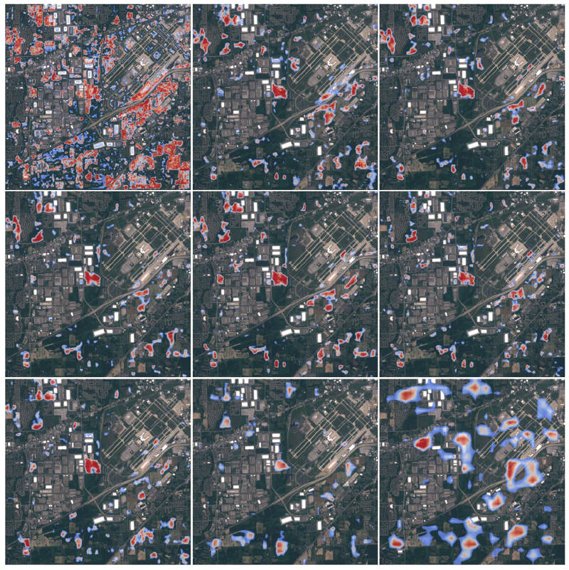
Figure 9: Qualitative outputs for different feature pyramid configurations.
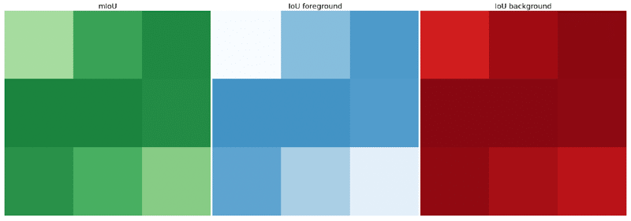
Figure 10: Quantitative IoU results showing optimal performance using levels 2–6.
Outlook
This project demonstrates a scalable approach for training deep change detection models without manual labels, leveraging the generative power of SinGAN and the multi-scale architecture of WNet. Future extensions include adapting the framework to radar and hyperspectral data, integrating it into foundation-model pretraining workflows, and deploying it at continental or global scales for environmental monitoring.